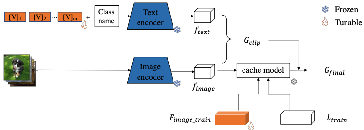

|
Jingchen Sun （孙精辰）
Ph.D. Student Department of Computer Science and Engineering The State University of New York at Buffalo Email: jsun39@buffalo.edu
|
About Me
I am a Ph.D. student in Computer Science at The State University of New York at Buffalo, fortunate to be supervised by Prof. Changyou Chen. Prior to this, I obtained my Master's degree from Zhejiang University and my Bachelor's degree from North China Electric Power University.
My research primarily focuses on multi-modal model representation learning and transfer learning. This includes, but is not limited to, vision-language models (e.g., CLIP), audio-language models (e.g., CLAP), and speech-language models (e.g., Whisper). I have developed several parameter and compute-efficient methods, such as cross-modal prompt tuning and training-free support sets, to facilitate and enhance the application of these multi-modal models in downstream tasks. I am currently researching how to leverage Retrieval-Augmented Generation (RAG) to enhance the reasoning capabilities of multimodal large language models (LLMs). I am always welcome the collaboration in these related topics.
News [Update!]
- 09/25/2024: One collaborative paper was accepted by NeurIPS 2024!
- 09/09/2024: One paper was submited to ICASSP 2025!
- 08/23/2024: I finished the intern at NEC Labs, great summer at Princeton !
- 07/15/2024: One paper was submited to WACV2025!
Publications
-

Craft: Cross-modal Aligned Features Improve Robustness of Prompt Tuning
Jingchen Sun, Rohan Sharma, Vishnu Suresh Lokhande, Changyou Chen
ArXiv 2024
Github PDF BibTeX Project Webpage -
 Prompt Tuning based Adapter for Vision-Language Model Adaption
Jingchen Sun, Qin Jiayu, Lin Zihao, Chen Changyou
ArXiv 2023
Github PDF BibTeX Project Webpage -
PIDNet: An Efficient Network for Dynamic Pedestrian Intrusion Detection
Jingchen Sun, Jiming Chen, Tao Chen, Jiayuan Fan, Shibo He
ACM International Conference on Multimedia (MM) 2020
Github PDF BibTeX Project Webpage
Internship
-
NEC Labs America
Research Intern
Princeton, NJ, June 2024 - Aug 2024 -
 Nokia Bell Labs
Nokia Bell Labs
Applied AI Researcher Intern
Murray Hill, NJ, June 2023 - Aug 2023 -
Bytedance
Computer Vision Intern
Shanghai, May 2021 - July 2021
Conference Reviewrs
- NeruIPS 2024, ICLR 2025, WACV 2025, ICASSP 2025
Teaching Asistant
- CSE 474/574: Introduction to Machine Learning (2024 Spring, 2022 Fall)
- CSE 676: Deep Learning (2022 Spring)